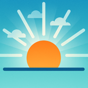

Shared with you in kairos
A kairos activity
Opening…
This page read the link in your browser. Nothing in it was sent to a server.

Shared with you in kairos
Opening…
This page read the link in your browser. Nothing in it was sent to a server.